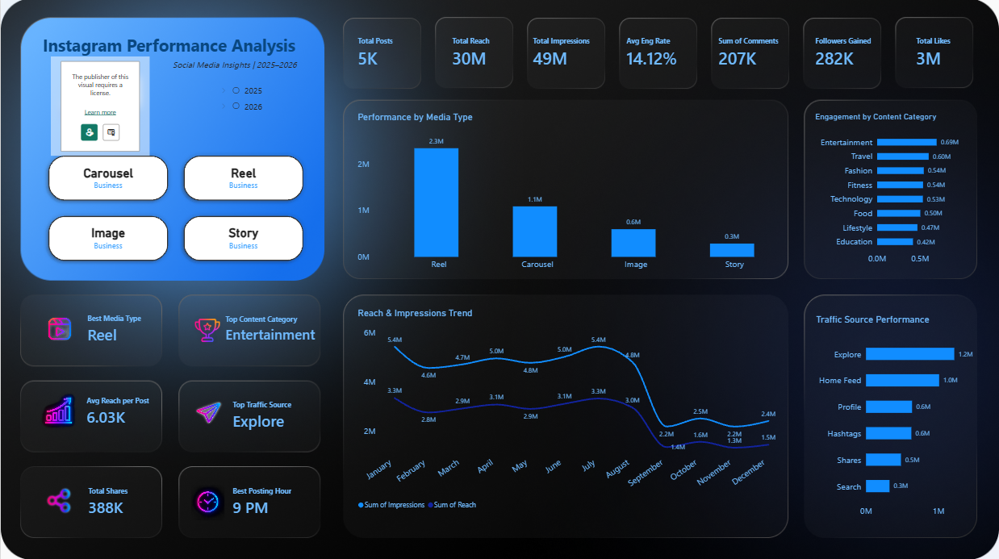

DATA ANALYTICS PROJECT
Instagram Analytics
A social media dashboard analyzing content reach, impressions, engagement rate, media type, comments, followers, likes and traffic sources.

Actual Power BI dashboard screenshot provided for this portfolio project.
Project focus
- Compare reach and engagement across content.
- Identify posting-time and content patterns.
- Summarize performance with clear KPIs.
Tools and approach
Power BI · Data cleaning · Data visualization · Interactive reporting
This project is designed to communicate key patterns clearly and help viewers explore the data through dashboard visuals and filters.